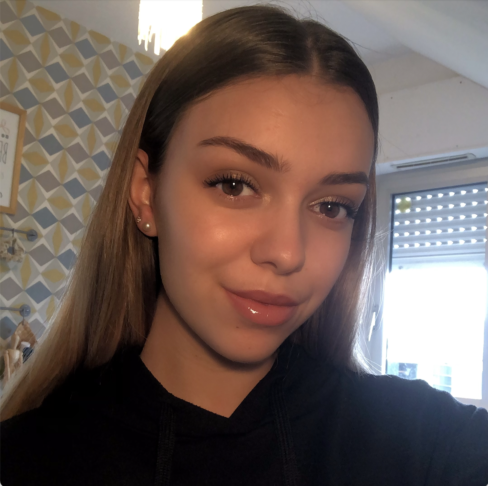
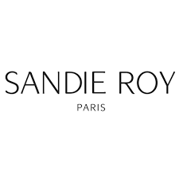

Hello, I'm Jeanne!
📠I am 21 years old and currently studying for a Master's degree in Digital Marketing & Sales at Kedge Business School Marseille. I am looking for a 6 month internship from Jyly to December 2023 in the fields of beauty, jewellery and influence.
Contact me! ✉ï¸ğŸ” MY EXPERIENCES
★ From September to November 2020, I was a marketing assistant at
Enedis, Tours. During my internship I had the opportunity to do
competitive intelligence, however my main mission was to promote a
SmartGrid demonstrator to the general public and local authorities.

★ From February to June 2021, during a company mission I was a
member of a marketing research firm at E.Leclerc, Basse Goulaine.
With my group I was able to create a questionnaire for a qualitative
study, then I analysed the collected data to finally be able to
propose recommendations to increase the results of the company.

★ From January to June 2022, I was a digital marketing and influence
assistant in a communication agency called Sandie Roy Paris. During
this internship I was in charge of digital monitoring, tracking and
reporting results.

📠MY EDUCATION
☆ From 2019 to 2022, I am studying at Audencia Bachelor in Management. I chose the marketing specialisation in the 3rd year.
☆ From 2016 to 2019, I studied at the Perverie Sacré Coeur in Nantes. I got my baccalaureate with option mathematics, with mention.
💡 MY SKILLS
★ Interpersonal skills ★
★ Creativity ★
★ Adaptability ★
★ Social networks ★
★ Pack office ★